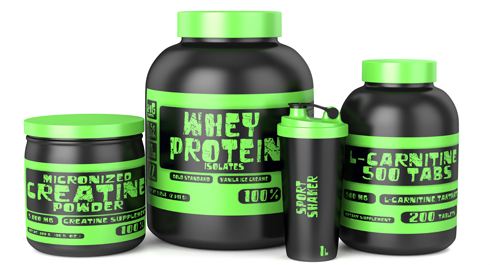

Сегодня пришло время затронуть одну из самых неоднозначных тем, вызывающую бурю обсуждений во время практически всех запусков нашей программы. Но тем не менее не рассказать о спортивном питании и добавках мы не можем, тем более, что мы уже говорили о том, что наше тело есть не что иное, как отражение нашего образа жизни.
В сегодняшнем посте мы поделимся с вами своим взглядом на спортивное питание и различные БАДы и постараемся объяснить, почему включение их в рацион оправдано ТОЛЬКО в ограниченных случаях и для ограниченной категории людей.

Этот пост будет в первую очередь посвящен тем видам добавок, которые в последнее время активно рекламируют нам в интернете и журналах в качестве отличного решения для тех, кто хочет выглядеть лучше. Самые популярные из таких добавок - протеиновые коктейли, гейнеры и жиросжигатели. Именно эта троица делает львиную долю выручки компаниям-производителям, хотя мы также скажем и пару слов о креатине, кофеине, витаминах и минеральных добавках, а также о веществах, повышающих буферную емкость крови.
Мы не будем сейчас рассматривать вопрос применения добавок с точки зрения их влияния на ваше здоровье в долгосрочной перспективе. К сожалению, данный вопрос в настоящее время недостаточно изучен, поэтому делать какие-либо выводы можно только по креатину и кофеину. Той информации, которую предоставляют компании-производители мы бы не стали слишком доверять, потому что в 1950-е в Америке было опубликовано достаточно большое количество исследований, подтверждающих положительные эффекты табакокурения. Это уже потом стали изучать связь между табаком и раком лёгких... Так что в данном вопросе мы крайне скептично относимся к добавкам, но предлагаем каждому решать за себя. О чем мы хотим поговорить сейчас, это о том, что в действительности рекламируемые препараты далеко не всегда смогут решить ваши проблемы.
Можно ли добиться отличных результатов без добавок? Чисто за счет тренировок на уличных площадках и питания?
Да, можно. И мы знаем много реальных примеров людей, которым это удалось. Было ли это трудно? Да, черт возьми! И чем лучше вы хотите выглядеть, чем сильнее хотите быть, тем больше времени нужно будет уделять и своим тренировкам и своему питанию. Чудес не бывает, только тяжелая работа над собой. Но, по крайней мере, воркаут позволяет сделать эту работу интересной и разнообразной. Перед тем как продолжить, мы бы хотели ещё раз напомнить об инфопостах про баланс калорий и про диету как образ жизни.
Для тех, кто всё же решил, что именно нехватка макро- и микронутриентов или эргогенных добавок в обычном рационе отделяет их от лучшего результата, мы подготовили немного конкретной информации по добавкам:
Предлагаем выделить 3 категории продуктов, которые обычно относят к спортпиту в зависимости от характера действия:
1. Собственно то, что сейчас принято называть спортивным питанием (напитки, батончики, гели, порошковые концентраты).
2. Добавки, повышающие спортивные показатели (креатин, кофеин, бикарбонат натрия, бета-аланин, нитраты).
3. Медицинские добавки (железосодержащие, кальцийсодержащие, витамины простые и комплексные, рыбий жир).
КАТЕГОРИЯ 1 - Спортивное питание
Сюда можно отнести протеины, гейнеры, различные баточники и напитки. По сути банка с протеином - это по факту боооооооольшой такой лоток на 1000 яиц или 100 литров молока или 10кг творога с 3-х литровой банкой варенья, запакованные в красивую упаковку и все приготовление которых заключается в том, чтобы размешать с водой.
Соответственно, эта категория будет эффективна ровно настолько, насколько она вписывается в план питания (если такого плана нет, то может, лучше сначала его составить, а потом уже думать о добавках?). Их основное предназначение — помогать набирать макронутриенты (белки, жиры, углеводы), если дальнейшее потребление обычной еды становится затруднительным или дискомфортным. Например, при подготовке в триатлоне суточный рацион спортсмена может достигать 5000 ккал в день, что означает — съедать примерно 5 кг каши в день. Естественно приходится вводить высокоэнергетические продукты. А возможно именно в вашей местности нет доступных источников омега-3 жирных кислот? К недостаткам можно отнести дороговизну относительно обычной еды и возможное неадекватное использование.
КАТЕГОРИЯ 2 - Добавки, повышающие спортивные показатели
Если говорить в общих словах об этих веществах, то они слегка расширяют "узкое горлышко бутылки" в обменных процессах на клеточном уровне. Т.е. эти вещества находятся в нашем организме в определенном ограниченном количестве, что позволяет показать нам определенную работоспособность. Внешний прием в виде добавок слегка увеличивает запас, что обычно помогает чуть дольше противостоять усталости (креатин, бета-аланин) или снижает ее субъективное восприятие (кофеин). Как результат - вы больше тренируетесь, за счет чего теоретически быстрее прогрессируете. Естественно, вмешательство в биохимию на клеточном уровне — штука довольно серьезная, поэтому даже если прием этих добавок регламентирован специалистами, возможна как индивидуальная непереносимость (боли в желудке, тошнота, головокружение, рвота), так и вполне характерные для каждого препарата эффекты (потеря чувствительности кожи для бета-аланина).
КАТЕГОРИЯ 3 - Медицинские добавки
К этой категории мы отнесем: витамины, препараты минеральных веществ-микроэлементов, антиоксиданты, комплексные препараты вышеуказанных групп.
Продукты этой категории назначаются, чтобы устранить соответствующий дефицит у спортсмена (например, железосодержащие добавки могут быть назначены для женщин из-за потерь крови, связанных с менструальным циклом, или при тренировке спортсменов в высокогорных условиях для увеличения количества эритроцитов). Без назначения врача (который руководствуется соответствующими анализами крови) принимать эти препараты может быть контрпродуктивно, т.к. переизбыток действующих веществ также вреден как и их недостаток (гуглим авитаминоз и гипервитаминоз).
Также в рекомендациях Американского колледжа спортивной медицины от 2015 г содержится однозначная рекомендация стараться устранять дефицит какого-либо вещества целенаправленным приемом узкоспециализированного препарата, а не использовать поливитаминные комплексы.
Почему люди покупают спортивное питание?
Допустим, какой-нибудь новичок очень хочет набрать массу (возможные варианты - похудеть, увеличить силовые, стать выносливее), но у него никак это не выходит. Хотя он вроде и тренируется дважды в день и кушает за семерых. Ситуация среди новичков довольно распространенная, не правда ли? Но мы уже знаем, что чудес не бывает, и его проблема заключается в том, что у него отсутствует профицит калорий. То есть он либо ест недостаточно, либо слишком много тренируется. К сожалению, он этого не понимает. Он думает, что уже достиг своих генетических пределов и пора обращать свои взоры в сторону дополнительного спортивного питания. Ведь все эти рекламные объявления только об этом и говорят и так заманчиво гарантируют ему набор массы в кратчайшие сроки.
Допустим, он поддается на заманчивые предложения и покупает себе баночку протеина или гейнера, и начинает его принимать. Что ему это дает? Очевидно, что теперь он начинает получать дополнительные калории, благодаря которым он сможет создать профицит, а, следовательно, начнет набирать массу. Вроде бы успех, но все не так просто, потому что...
Его результаты будут расти ТОЛЬКО пока он принимает спортивное питание. И ТОЛЬКО в том случае, когда этот фактор был единственным, тормозившим его развитие, а со всеми остальными факторами был полный порядок.
Предлагаем перечитать выделенное предложение ещё раз, если остались сомнения по поводу того, принимать или нет спортивное питание.
Поскольку профицит калорий будет обеспечиваться за счет дополнительного приема спортивного питания, то отказ от его употребления сделает невозможным дальнейший рост, а возможно (в зависимости от суточной дозировки относительно обычной еды), приведет к постепенному возврату к тем результатам, которые соответствуют вашему образу жизни. Это так же неизбежно, как то, что солнце завтра взойдет на востоке, а сядет на западе. И даже если вы знаете пару историй, когда люди прекращали принимать спортивное питание, а их результаты не уходили, то причину этого нужно искать среди других факторов.
В общем, выбор у нашего новичка небольшой. Либо подсесть на крючок маркетологов компании-производителя до тех пор, пока он хочет выглядеть "хорошо" (условно), либо удивляться, почему после прекращения приема питания он снова и снова возвращается к прежним результатам. Хочу отметить, что компании, производящие спортивное питание, будут очень рады, если он сделает выбор в пользу первого варианта, потому что это будет означать для них постоянный приток денежных средств от продаваемых продуктов.
Наш новичок понятия не имеет о том, как правильно питаться, из чего состоят продукты, сколько в них калорий и т.д.
Можно тренироваться невероятно тяжело, но без соответствующего питания достигнуть сколько-нибудь значимых результатов будет невозможно. Поэтому наш гипотетический новичок после нескольких недель, месяцев или даже лет безрезультатных занятий просто-напросто бросит попытки достигнуть желаемого результата (скажем набрать несколько килограмм массы). Похожую ситуацию можно очень часто наблюдать среди посетителей фитнес-клубов, которые месяцами ходят на тренировки и не добиваться никаких (вообще!) результатов. Потому что они не потрудились разобраться в том, как работает их организм.
Мы можем понять, зачем принимают спортивное питание спортсмены, потребности которых не всегда можно удовлетворить за счет обычной еды, особенно во время соревнований, переездов и т.д.
Это особенность их профессии, правила игры, по которым они должны играть, если хотят показывать максимум, на который способно их тело. Но даже они не всегда достигают того результата, который вы видите на фотографиях, в интернете или по телевизору во время трансляций с соревнований. Спортсмены, превышающие все мыслимые и немыслимые границы человеческих возможностей, находятся на пике формы довольно ограниченное время (иногда считанные часы) и не смогут поддерживать такое состояние даже хотя бы месяц. Они в течение нескольких месяцев-лет готовятся к этим конкретным соревнованиям, или к этой конкретной фотосессии, где они должны выложиться на полную. Мы не будем сейчас никого ни в чем обвинять, просто примите как данность, тот факт, что в спорте высших достижений без стероидов не существует. И если у вас есть знакомый профессиональный спортсмен (или бывший спортсмен, они охотнее общаются на эту тему), готовый поделиться информацией, то поговорите с ним.
Интересный факт:
Для того чтобы получить одну удачную фотку на обложку нужно сделать пару сотен фотографий (более 700 для одной из обложек с Грегом Плиттом, мы видели исходники со съёмок), из которых выбирается лучшая, и потом она еще ретушируется на компьютере. К сожалению, в этом заключается вся суть фитнес индустрии, которая пытается продать вам способ стать таким же, как эта красивая картинка, которой на самом деле не существует.
Если заниматься для себя, то стоит задуматься над тем, действительно ли нужны все эти добавки? Или просто хочется найти быстрое решение к долгосрочной проблеме? Во втором случае вынуждены огорчить, потому что такого решения не существует в природе, а это значит, что для получения результатов придется начать менять себя и свой образ жизни. Ага, это снова возвращает нас к инфопосту об образе жизни.
Если мы вас все еще не убедили, что не стоит уповать на чудодейственную таблетку или порошок, то вот вам еще один аргумент ПРОТИВ приема спортивных добавок. Даже в США и европейских странах производство категории БАДов (а спортпит и добавки приравниваются к БАДам), слабо регламентируется и к ним не предъявляют таких жестких требований как, например, к фармакологическим средствам. В результате, что окажется в банке с заветным протеином или жиросжигателем, известно одному только производителю, а бывает там